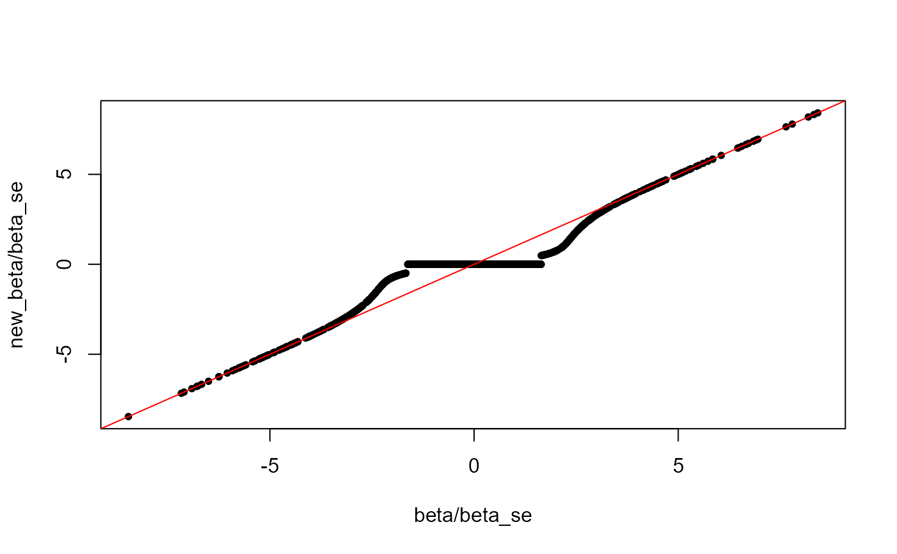
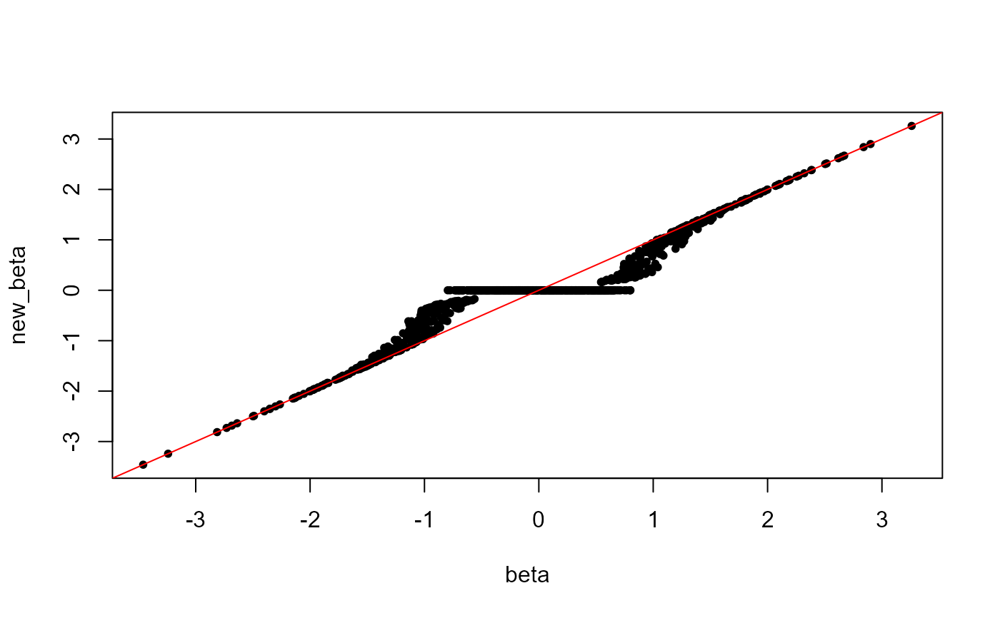

P-value thresholding and correction of summary statistics for winner's curse.
snp_thr_correct(beta, beta_se, lpS, thr_lpS)
| beta | Vector of effect sizes. |
|---|---|
| beta_se | Vector of standard errors for |
| lpS | Vector of -log10(p-value) associated with |
| thr_lpS | Threshold on |
beta after p-value thresholding and shrinkage.
Zhong, H., & Prentice, R. L. (2008). Bias-reduced estimators and confidence intervals for odds ratios in genome-wide association studies. Biostatistics, 9(4), 621-634.
beta <- rnorm(1000) beta_se <- runif(1000, min = 0.3, max = 0.5) new_beta <- snp_thr_correct(beta, beta_se = beta_se, thr_lpS = 1) plot(beta / beta_se, new_beta / beta_se, pch = 20); abline(0, 1, col = "red")# Can provide -log10(p-values) instead of standard errors lpval <- -log10(pchisq((beta / beta_se)^2, df = 1, lower.tail = FALSE)) new_beta2 <- snp_thr_correct(beta, lpS = lpval, thr_lpS = 1) all.equal(new_beta2, new_beta)#> [1] TRUE